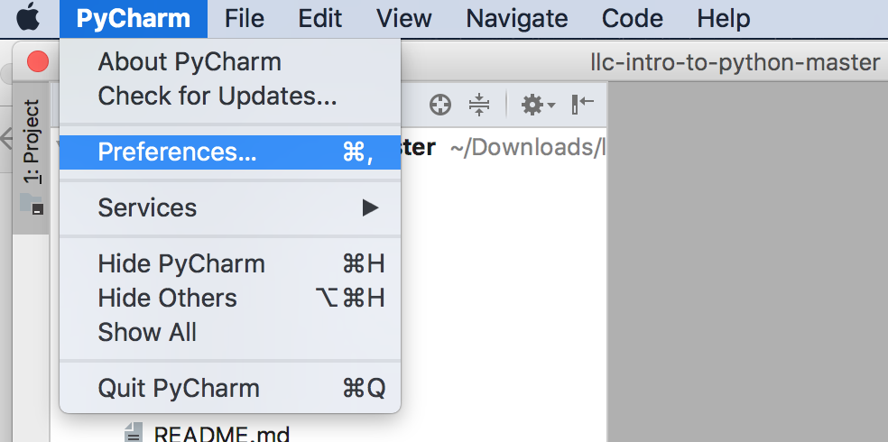
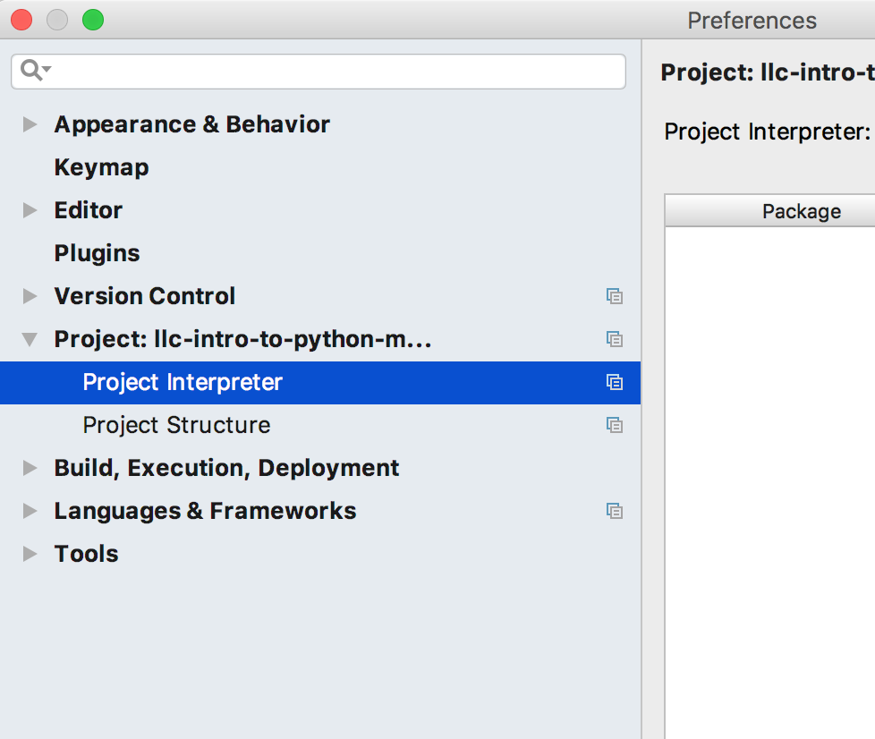
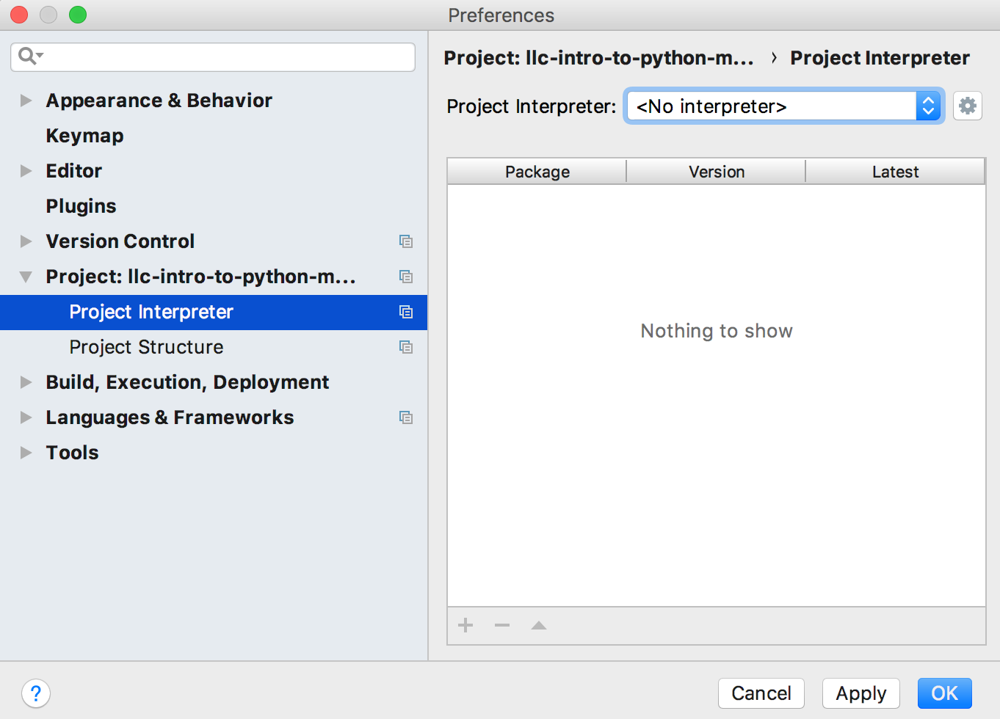
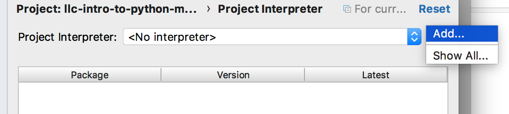
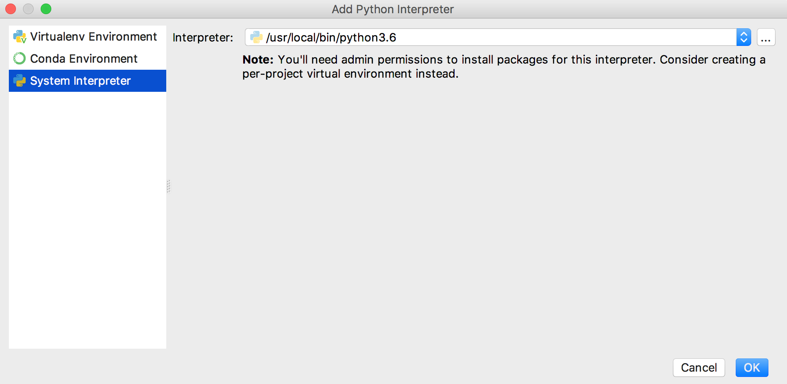
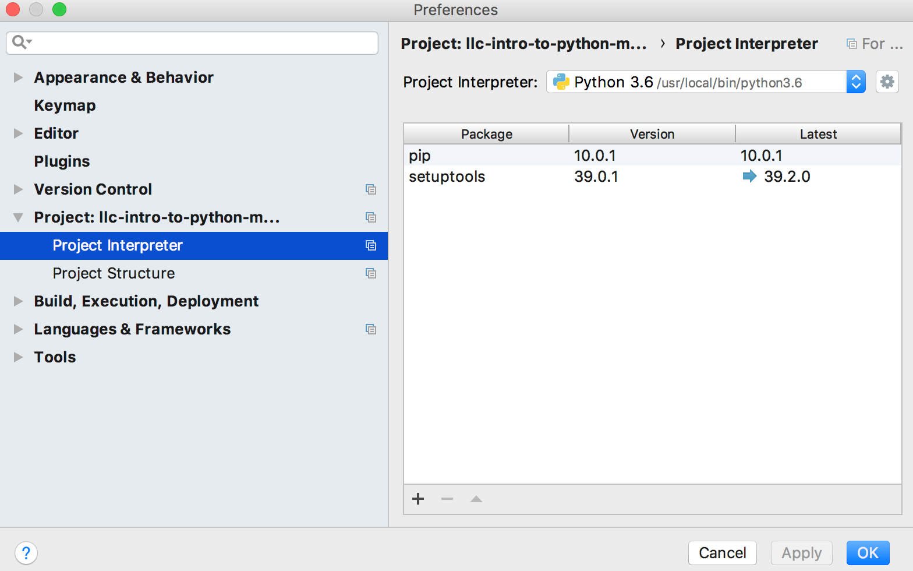
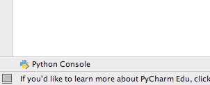
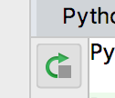
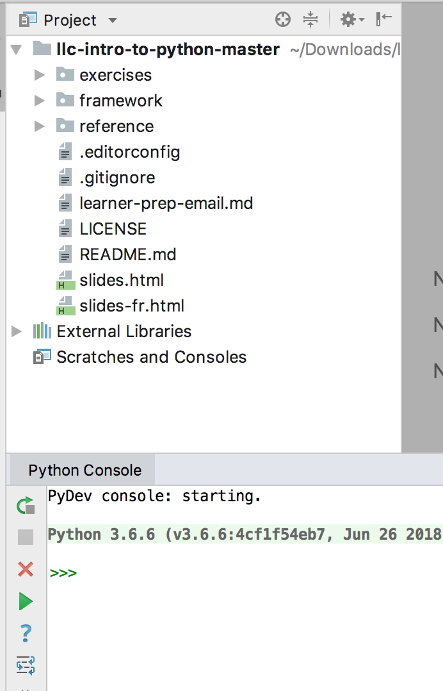

<!DOCTYPE html>
<html lang="en">

<head>
  <meta charset="utf-8">
  <meta name="viewport" content="width=device-width, initial-scale=1, maximum-scale=1">
  <title>Femmes en programmation</title>
  <link rel="stylesheet" href="../framework/css/slideshow.css" data-noprefix>
  <link rel="stylesheet" href="../framework/css/fonts.css" data-noprefix>
  <link rel="stylesheet" href="../framework/css/highlightjs/github.css" data-noprefix>
  <link rel="stylesheet" href="../framework/css/styles.css" data-noprefix>
  <link rel="shortcut icon" href="../framework/img/favicon.ico">

  <!-- Takes care of CSS3 prefixes -->
  <script src="../framework/scripts/prefixfree.min.js"></script>

  <!-- opens all links in a new window -->
  <base target="_blank">
</head>

<!-- Timer/progress bar: Define the presentation duration using "data-duration" in minutes. -->

<body class="en" data-duration="360">

  <main>

  <section class="slide" data-toc data-markdown>
    <script type="text/template">
      <h1>Installation de Python : Mac</h1>

        <ol>
          <li>Téléchargez les fichiers d'apprentissage (dossier zip).</li>
          <li>Dézippez le dossier.</li>
          <li>Installez la dernière version de Python 3.x : <a href="https://www.python.org/downloads">https://www.python.org/downloads</a>.
          <li>Installez Pycharm Educational Edition : <a href="https://www.jetbrains.com/pycharm-educational">https://www.jetbrains.com/pycharm-educational</a>.</li>
          <li>Exécutez pycharm et ouvrez le dossier de projet que vous venez de dézipper.</li>
          <li>
              Configurez Pycharm afin qu'il utilise la version de Python 3.x plutôt que of 2.7.
              <ul>
                  <li>
                      Sélectionnez Pycharm > Preferences.
                      <br/>
                  </li>
                  <li>
                      Sélectionnez le projet, puis cliquez sur Project Interpreter.
                      <br/>
                  </li>
                  <li>
                      Selon votre configuration, il est possible que Project Interpreter soit sélectionné (ou non) dans le menu déroulant.
                      <br/>
                  </li>
                  <li>
                      À côté du menu déroulant, sélectionnez le petit pignon et cliquez sur Add.
                      <br/>
                  </li>
                  <li>
                      Une autre boîte de dialogue, Add Python Interpreter, devrait s'afficher.
                      <br/>
                  </li>
                  <li>
                      Sélectionnez System Interpreter à gauche, puis la version Python 3.6 que vous avez installée précédemment. Habituellement, le chemin d'accès de cette version est /usr/local/bin/python3.6.                    <br/>
                  </li>
                  <li>
                      Cliquez sur OK dans toute les fenêtres. Ensuite, vous devriez voir ceci dans la boîte de dialogue Preference :
                      <br/>
                  </li>
                  <li>Dans la fenêtre de projet principale cliquez sur Python Console, puis sur le boutton Rerun pour réexécuter.
                      <br/>
                  </li>
                  <li>Vous devriez voir la bonne version de Python (3.6.x ou ultérieure) dans la console, comme ceci :
                  <br/>
                  </li>
              </ul>

          </li>
          <li>C'est tout!</li>
        </ol>

  </script>
</section>

</main><!-- cls main section -->


  <script src="http://code.jquery.com/jquery-1.11.0.min.js"></script>
  <script src="../framework/scripts/slideshow.js"></script>

  <!-- Uncomment the plugins you need -->
  <script src="../framework/scripts/plugins/css-edit.js"></script>
  <script src="../framework/scripts/plugins/css-snippets.js"></script>
  <script src="../framework/scripts/plugins/css-controls.js"></script>
  <!-- <script src="plugins/code-highlight.js"></script>-->

  <script src="../framework/scripts/plugins/markdown/marked.js"></script>
  <script src="../framework/scripts/plugins/markdown/markdown.js"></script>
  <!-- <script src="../framework/scripts/plugins/highlight/highlight.js"></script> -->
  <script src="../framework/scripts/plugins/highlight/highlight-8.4.min.js"></script>
  <script>hljs.initHighlightingOnLoad();</script>

  <script>
    var slideshow = new SlideShow();

    // Grabs all the .snippet elements
    var snippets = document.querySelectorAll('.snippet');
    for(var i=0; i<snippets.length; i++) {
      new CSSSnippet(snippets[i]);
    }

    // Adds "edit me" note to editable code areas
    jQuery(document).ready(function(){
      jQuery(".snippet").before("<span class=\"edit\">edit me</span>");
    });
  </script>
</body>
</html>
